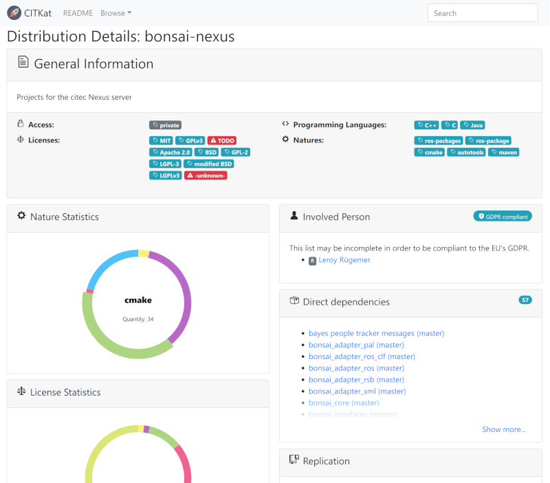

Advanced¶
Deployment Modes¶
Users can choose different deploy modes in RDTK:
toolkit
Used to generate build jobs which bootstrap a complete software distribution from scratch by installing it into a filesystem location. The generated Jenkins jobs are triggered in the appropriate order by an additional orchestration job – no SCM polling is performed in this mode.
ci-deploy
ci
Continuous integration mode for continuously building and testing software without installing into a filesystem location. Artifacts are copied between build job workspaces to handle dependencies between projects.
Makefile
TODO
Docker
TODO
Private Repository¶
Note
The best way to access private git repositories is accessing them with ssh keys. To enable ssh access for git repositories the project URL scheme has to be git+ssh.
Example for GitHub projects: git+ssh://github.com/USER/PROJECT.git
Password based access¶
In cases where access to a repository only possible with password restricted access, build-generator and Jenkins need to know the login credentials.
Note
If you are using GitHub for example, you can generate an access token with read-only access to your repository by ticking repo -> public_repo and then use this token as password along with your GitHub login name.
build-generator requires you to store your credentials unecrypted in a file called ~/.netrc, using the following syntax for every remote machine your distribution is referencing:
machine projects.cit-ec.uni-bielefeld.de
login your_user_name
password secret_api_token_OR_plain_password
Jenkins credentials store¶
After generating a distribution with private access projects, build-generator shows the required credentials:
The following credentials have been referenced and have to be configured in Jenkins' credential store: * "CREDENTIAL_ID" for jobs ... * "CREDENTIAL_ID" for job ...
The given CREDENTIAL_IDs need to be added to the Jenkins credential store jenkins_credentials.
Speed up generator analyze (Caching)¶
build-generator is using git ls-remote a lot. When
generating often, this process can take up much time. It is
then recommended to enable caching, try
cache-directory
and cache-age-limit.
Generate Catalog Representation¶
RDTK includes a human readable representation of data generated from recipes and source code.
You can use build-generator to emit these catalog-like pages:
export OUTPUT_DIR="$HOME/catalog"
export DISTRIBUTION="$RDTK_ROOT/citk/distribution/example-*.distribution"
$RDTK_ROOT/build-generator report -k catalog -o "$OUTPUT_DIR" "$DISTRIBUTION"
Install the catalog server:
git clone https://github.com/RDTK/CITKat.git; cd CITKat
./setup install --user
Run the catalog server:
export PATH=$HOME/.local/bin:$PATH
cd "$OUTPUT_DIR"
citkat
Point your browser to http://localhost:5000/.
If you’d like to learn how to set up a production environment, have a look at the README.